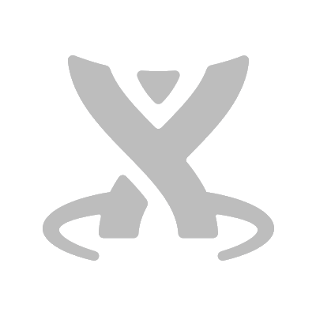

<md-sidenav-container class="demo-root" fullscreen>
  <md-sidenav #start mode="push">
    <md-nav-list dense>
      <a *ngFor="let navItem of navItems" md-list-item (click)="start.close()" [routerLink]="[navItem.route]">
        {{navItem.name}}
      </a>

      <hr>

      <a md-list-item (click)="start.close()" [routerLink]="['baseline']">
        Baseline
      </a>
    </md-nav-list>
    <button md-button (click)="start.close()">CLOSE</button>
  </md-sidenav>
  <div id="top">
    <md-toolbar color="primary">
      <button md-icon-button (click)="start.open()">
        <md-icon class="md-24" >menu</md-icon>
      </button>
      <div class="demo-toolbar">
        <h1 style="padding-left: 20px;">Munis Pattern Library</h1>
      </div>
      <div [fxLayout]="direction" class="containerX" fxLayout.xs="column" fxLayout.sm="column">
        <span mdTooltip="Material UI Guidelines"><a href="https://material.io/guidelines/" target="_blank"></a></span>
        <span mdTooltip="Tyler Angular"><a href="http://pladvsv-tldr:8888/#/" target="_blank"></a></span>
        <span mdTooltip="Confluence Pattern Library"><a href="https://tylertechnologies.atlassian.net/wiki/spaces/UP/overview" target="_blank"></a></span>
      </div>
    </md-toolbar>

    <div class="componentToolbar" [fxLayout]="direction" fxLayoutAlign="start center">
      <h1>{{pageTitleService.title.value}}</h1>
      <span class="example-spacer"></span>
    </div>

    <div #root="$implicit" dir="ltr" class="demo-content">
      <router-outlet></router-outlet>
    </div>
  </div>
</md-sidenav-container>

<material-scrolltop></material-scrolltop>